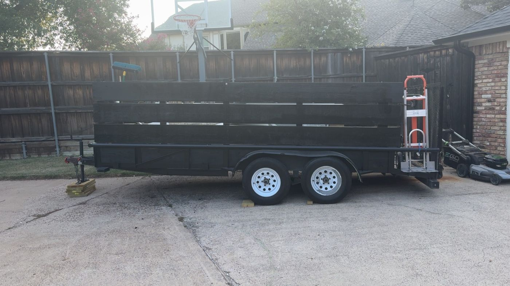

One pickup truck and a promise
How a borrowed trailer and a Saturday side hustle turned into DFW's friendliest junk removal crew.
Meet Todd and his son Nash

Hero’s is Todd’s company. He learned early, first in the military and then on every job since, that how you treat people is the whole job. He started Hero’s Junk Removal with a pickup truck and a borrowed trailer, helping neighbors clear out garages after storms and moves, and he built it on one idea: treat every house like it belongs to your own family.
What he kept running into in the trade was the opposite: no-show crews, prices that doubled once the truck was loaded, and perfectly good furniture headed straight to the landfill. So Hero’s runs on the promise Todd made on those first jobs: show up when you said you would, charge what you quoted, and haul it like the house belongs to your own family.
Today Todd runs Hero’s alongside his son Nash. What started with one trailer now works across North Texas with its own truck and trailer. A garage in Plano led to an estate in McKinney. A property manager in Frisco handed the number to three more. Every job is still handled against one question: would we do this at our own family’s house?
Family owned and operated. Todd and his son Nash review every job personally. If there is a scuff or a surprise on the invoice, they want to know why, and they make it right.

What we believe
Junk removal is a trust business. You are letting strangers into your home, your garage, and sometimes a parent's estate. The quote, the crew, and the cleanup all run on our word, and we protect it like it is the whole company, because it is.
The quote is the bill. You approve a volume-based price before anything goes on the truck. If the pile turns out heavier than it looked, that is our problem, not yours.
The landfill is the last resort. Usable furniture and appliances go to local donation partners. Metal, cardboard, and electronics go to recyclers. We aim to divert more than half of every load.
Local matters. Our crews live in the cities they serve. The folks clearing your garage in Frisco probably drive past your street on the way to their kid's school.
Veteran owned, family run, easy to reach
Hero’s is veteran owned. Todd served in the military, and that standard runs the whole operation, from him down to his son Nash: we answer our own phone, show up when we say we will, and give you straight answers every time. Ask us anything.
What people ask before hiring us
Is Hero’s veteran owned?
Yes. Hero’s is owned by Todd, a military veteran, who runs it with his son Nash. On-time, respectful crews who treat your home like their own. Ask any time.
How does your pricing work?
By volume: you pay for how much of our trailer your junk fills, quoted and approved before anything is loaded. The quote is the bill.
Do you provide donation receipts?
Yes. When usable items go to our donation partners, the receipt comes back to you on request. Families handling estates use this constantly.
Who actually shows up to my house?
The Hero’s crew in person, not subcontractors or marketplace strangers, and no surprises at the door.
Do I need to be home for a pickup?
Not always. Curbside and garage pickups can be approved by phone, with before-and-after photos when the job is done.
Talk to a hauler, not a call center
Our dispatch sits in DFW, not overseas. Call and hear the difference.